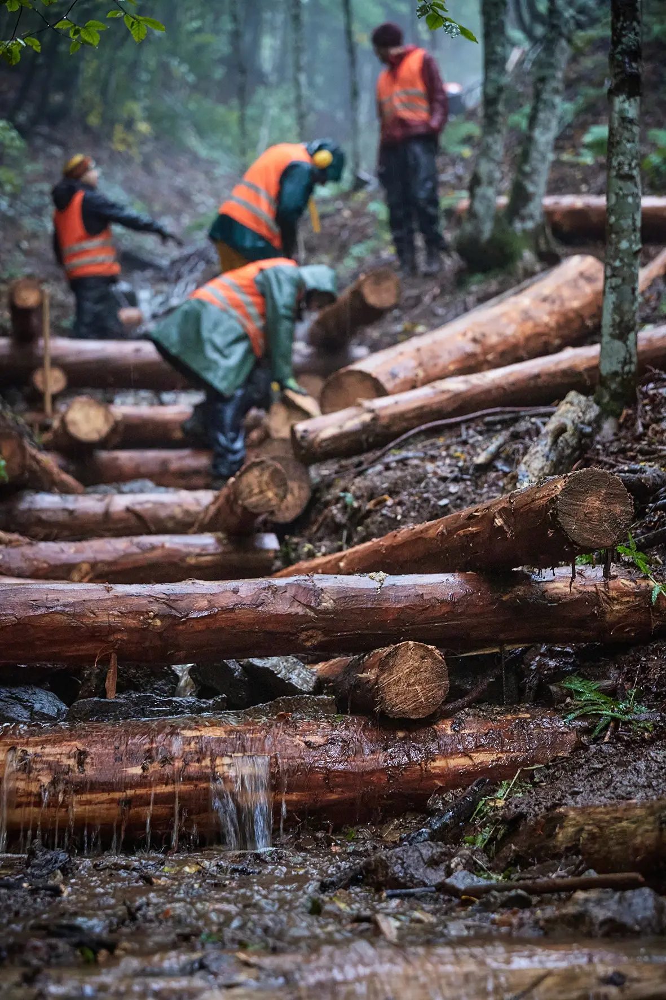
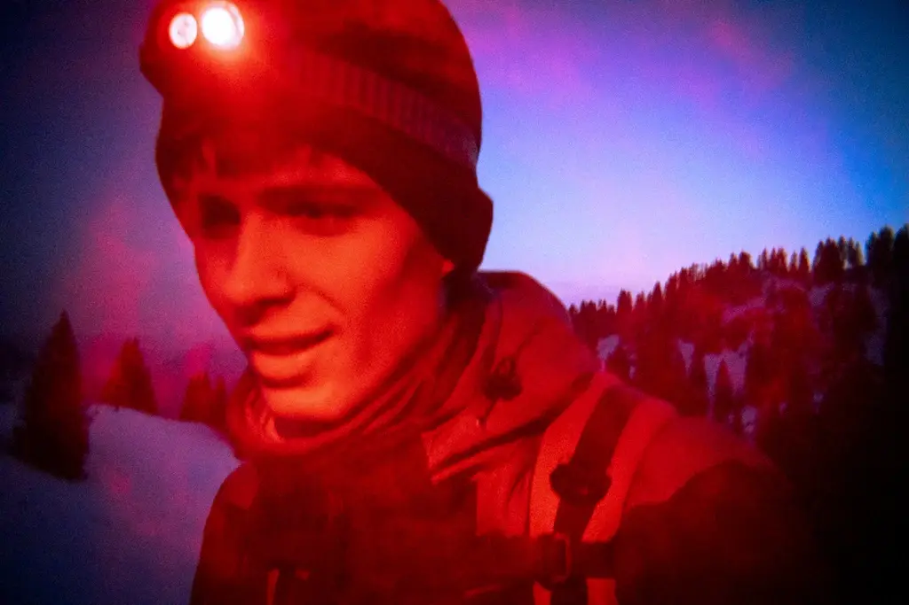
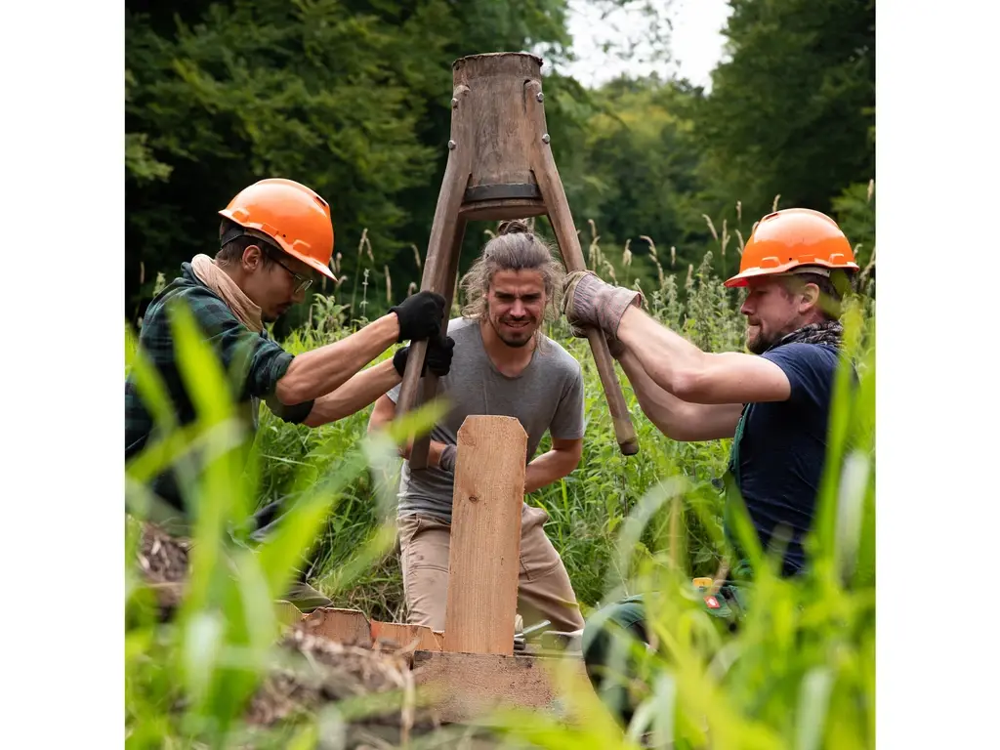
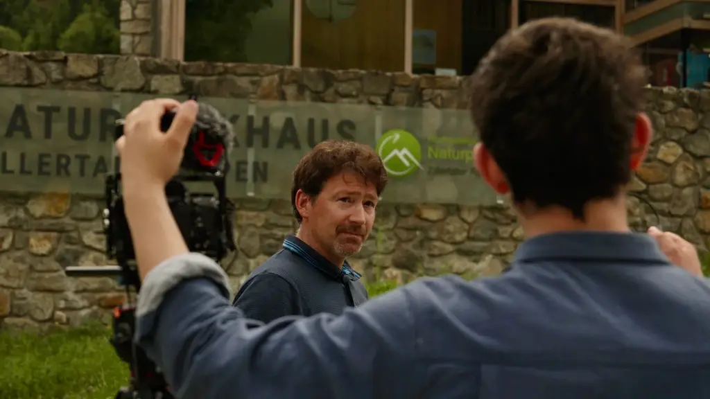
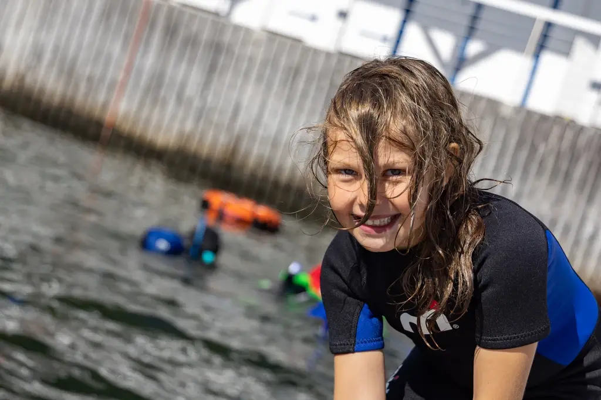
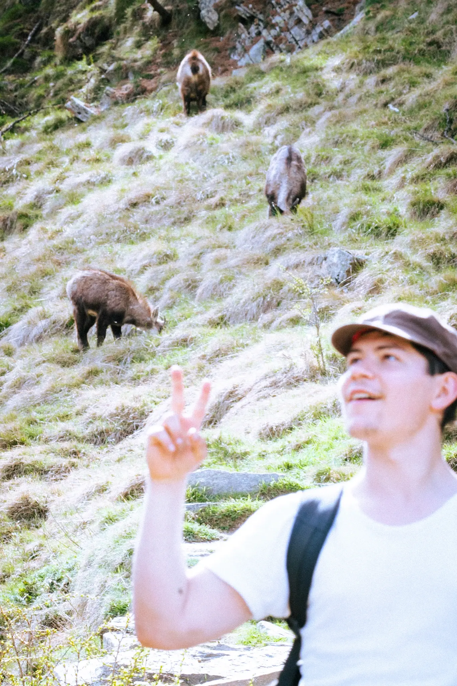

We create visual stories for sustainable businesses — from high-quality films and photography to strategic content for social media.
Five ways to work with us, depending on the depth of storytelling and the level of impact you want to create.
Real stories instead of advertising slogans
From fast social content to long-term documentation
Individually calculated – no one-size-fits-all pricing
Personal support from concept to final cut
Many companies and organizations are doing meaningful work for the environment — but that impact often stays invisible, or gets communicated in a way that feels generic.

If you are genuinely doing good work, we help you show it credibly: real footage, real people, real outcomes, turned into films and photography your audience actually trusts. We offer five ways of collaboration, depending on the depth of storytelling and the level of impact you want to create.

Five ways to work with us.
From fast, compact content to deep documentary storytelling — choose the depth that matches your goals. See exact scope and pricing for each below.

Photo & Video Content
Fast, compact visual production for clear communication — ready-to-use assets without a long production timeline.

Image Films
Structured cinematic storytelling built around one to two shooting days — a concise film that gives partners an immediate emotional understanding of why your work matters.

Documentary Short Productions
Deep, cinematic storytelling built around real people, real places and real impact — a documentary-style short film that goes beyond traditional marketing.

Social Media Production & Management
Ongoing content for Instagram, TikTok and beyond — building visibility, trust and long-term audience growth.

Long-Term Collaboration
For projects that require continuous storytelling. We become your long-term visual partner, documenting your journey over time — scope, cadence and channels developed individually with you.
Pricing & what's included
All prices below are orientational ranges. Every project is individually calculated based on scope, location, number of shooting days and production requirements. Once we understand your project, we create a fully personalized offer tailored to your exact needs.
Photo & Video Content
Short-form production (0.5–1 day)
Image Film
1–2 shooting days · cinematic short film
Documentary Short Production
Multi-day production · full post-production package
Social Media / Long-Term Management
Depends on frequency, scope and collaboration depth
Long-Term Collaboration
Developed individually based on shared goals and duration
1 Contact Form
You fill out our contact form and describe your project, goals and timeframe.
2 Project Understanding
We review your request and ask a few targeted questions to fully understand your needs.
3 Custom Offer
You receive a personalized production proposal including concept, scope and pricing. From there, we define the collaboration and begin production.
Good to know
How long does a production typically take?
It really depends on the project. For a quick photo & video shoot, a single day on location is often enough. For documentaries and image films, we're usually looking at somewhere between one and five shooting days, depending on the story, the locations involved, and how much access we need to the people and places we're filming.
Do you travel for productions?
Yes — very much so. Being on the road for shoots is a core part of how we work, and we're regularly traveling to wherever the story is, whether that's a short trip or a longer production further afield.
Who owns the usage rights for the final film and photos?
This is always agreed on in writing before we start production, so there's no ambiguity later. In most cases, full usage rights for the final film and photos go to you as the client once the project is delivered.